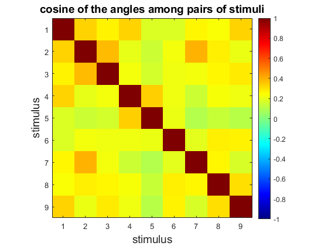

Script for testing association: representation with CNN
Do the learning of both layers at the same time
Contents
Prepare enviroment
clear close all rng(3) path(path,'MatFunc/Vision') path(path,'MatFunc/Accuracy') path(path,'MatFunc/Simulate') path(path,'MatFunc/Misc')
Read training data
Figures = {'Two','Three','Seven','Square','Semicircle','Star','LetterG','LetterH','LetterK'};
FLDR = 'Images/MomTrain4';
PlotFLG = true;
% Load pretrained network
CNN = resnet50;
layer = 'activation_48_relu';
figure('color','w','position',[100 100 900 900])
feat = ImportImagesEvalCNN(CNN, layer, FLDR, Figures,PlotFLG);
Sensory stimuli (and angles between them)
s = feat; [n,~] = size(s); s = sqrt(3/n)*(s - mean(s))./std(s); nrmS = sqrt(sum(s.^2)); % norma s S = s./nrmS; CosAngle = S'*S; % cos(angle) figure('color','w') imagesc(CosAngle,[-1 1]) axis square colorbar colormap('jet') xlabel('stimulus','FontSize',14) ylabel('stimulus','FontSize',14) title('cosine of the angles among pairs of stimuli','FontSize',14)
Do simulations with Option D.
M = 300; % number of neurons in the selective layer Tmax = 400; % max integration time Th = 0.6; % selective threshold h = 0.0025; % time step (better to decrease) d = 150; % inhibitory coupling [n,L] = size(s); % dimension and number of stimuli f = @(t) mod(fix(t),L)+1; % function defining the stimulus sequence alpha = 30; b2 = 0.7; % Set and train the sensory layer W0 = 2*rand(n,M) - 1; % random neurons [~,id] = sort(sum(s'*W0 > Th)); % sort neurons for convenience W0 = W0(:,id); A = 150; % number of neurons in the selective layer K = 3; % integration Thcn = 0.125; % conceptual threshold bcn2 = 0.25; U0 = 2*rand(M,A) - 1; % random neurons % Hebbian learning [W,U] = SimulateNeurons4Layers(Tmax, h, W0, U0, s, f, K, alpha, b2, bcn2, Th, Thcn, d);
Plot selective layer
figure('color','w','position',[100 100 1000 600]) Resp = s'*W > Th; Resp0 = s'*W0 > Th; PlotResultsOfSelectiveStratum(s, Resp0, Resp) figure; R = orderRasterPlot(Resp); spy(R); daspect([10 1 100]); title("Rasterplot selective layer neurons and stimuli they respond to"); xlabel("Neurons"); ylabel("Stimuli");
Plot concept layer
y = max(0,W'*s - Th); % compute reaction to s figure('color','w','position',[100 100 1000 600]) Respcn = y'*U > Thcn; Respcn0 = y'*U0 > Thcn; PlotResultsOfConceptStratum(y, Respcn0, Respcn) figure R = orderRasterPlot(Respcn); spy(R); daspect([10 1 100]); title("Rasterplot concept layer neurons and stimuli they respond to"); xlabel("Neurons"); ylabel("Stimuli");
Generate concept map
dict = conceptmap(Respcn',K);
Read test examples
Figures = {'Two','Three','Seven','Square','Semicircle','Star','LetterG','LetterH','LetterK'};
FLDR = 'Images/Test';
PlotFLG = true;
figure('color','w','position',[100 100 900 900])
[feat, class] = ImportImagesEvalCNN(CNN, layer, FLDR, Figures,PlotFLG);
% Change classes to concept tags
concpt = zeros(1,length(class));
for i = 0:(L/K)-1
concpt(ismember(class,i*K+1:(i+1)*K)) = i+1;
end
s2 = feat;
[n,Lex] = size(s2);
s2 = sqrt(3/n)*(s2 - mean(s2))./std(s2);
Compute precision
error = 0; errormis = 0; nonignex = 0; for i=1:Lex pred = predictcon4(W,U,s2(:,i),Th,Thcn,dict); if pred ~= -1 nonignex = nonignex + 1; if pred ~= concpt(i) error = error + 1; errormis = errormis + 1; end else error = error + 1; end end prec = 1 - error/Lex; fprintf("The precision is: %f\n",prec); precmis = 1 - errormis/nonignex; fprintf("The precision of misclassification is: %f\n",precmis);
The precision is: 1.000000 The precision of misclassification is: 1.000000
Save model matrix
save('Model/Wcnn.mat','W'); save('Model/Ucnn.mat','U'); save('Model/Thcnn.mat','Th'); save('Model/Thcncnn.mat','Thcn'); save('Model/dictcnn.mat','dict');